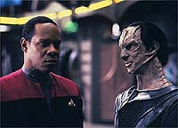
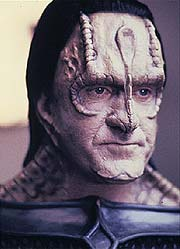
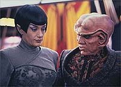
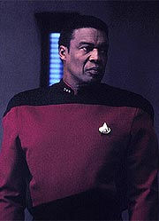
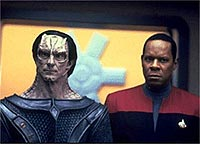

|

|
|
MANCHETE
DO EPISDIO
Histria
de cunho poltico traz em
destaque o dueto Sisko e Dukat
Episdio
anterior | Prximo
episdio
Sinopse:
Data Estelar:
desconhecida.
Um cargueiro Cardassiano (o
Bok'Nor) destrudo imediatamente aps a sua partida da estao,
fruto de sabotagem por um cidado da Federao, de nome William
Samuels, vestido como oficial da Frota Estelar.
Investigaes preliminares revelam traos de tecnologia
exclusiva da Federao entre os destroos do cargueiro enquanto
chega estao um antigo amigo de Dax e de Ben Sisko desde os
tempos da Academia da Frota Estelar, o tenente-comandante Calvin
Hudson. Kira est bastante preocupada com a possibilidade de
retaliao dos Cardassianos contra Bajor.
 Hudson
o responsvel pelas colnias da Federao no interior da
Zona Desmilitarizada. Ele diz claramente a Sisko que a Federao
abandonou essas colnias, sua presena no local uma literal
palhaada e o tratado entre federados e Cardassianos, sob
qualquer aspecto, foi um mau tratado. Hudson garante a Sisko que
os Cardassianos no vo retaliar, pois obtiveram o que queriam
do tratado e no vo arrisc-lo enviando foras ao interior da
Zona Desmilitarizada.
De volta ao Promenade, uma Vulcana, Sakonna, procura Quark para
encomendar mercadorias (pouco antes, ela havia se encontrado com
Samuels, fornecendo instrues para facilitar sua fuga da estao,
mas seus planos so frustrados, pois Samuels acaba sendo raptado
por dois aliengenas, sem conhecimento dela).
Ben Sisko volta aos seus aposentos e se surpreende por no
encontrar Jake, mas sim gul Dukat. Dukat diz estar ali para ajudar
(de forma no-oficial) no "Caso Bok'Nor" e promete
oferecer a Sisko uma real noo do que est acontecendo na Zona
Desmilitarizada.
 Sisko
e Dukat partem em um Explorador. L encontram naves com
assinaturas de dobra da Federao e de Cardssia, com configuraes
totalmente desconhecidas. Ambas as faces ignoram as ordens de
Sisko e de Dukat, envolvendo-se em diversas manobras militares
literalmente nas "barbas" dos dois, sobre o que Dukat
comenta: "Veja, Comandante, que sem ajuda de nenhum de nossos
governos, estes colonos j comearam a sua prpria guerra
particular no interior da Zona Desmilitarizada".
De volta a Deep Space Nine, Sakonna chega para jantar com Quark e
mostra a lista de itens em que ela est interessada. Atordoado,
Quark descobre que a Vulcana est interessada em uma quantidade
enorme de armas. No dando a menor bola para a reao do
Ferengi, ela avisa que vai pagar em Latinum e vai precisar de um
suprimento contnuo de "mercadoria".
Na Zona Desmilitarizada, Sisko e Dukat adentram a sala do conselho
em Volan III, onde as faces de colonos Cardassianos (liderados
por gul Evek) e colonos da Federao (liderados por Hudson, e
tendo entre eles uma mulher chamada Kobb e um homem chamado
Amaras) discutem os eventos recm-presenciados por Sisko e Dukat.
Em meio a exaltadas discusses de responsabilidade, Evek produz
um vdeo contendo a confisso de Samuels (claramente torturado e
brutalizado) sobre a sabotagem do Bok'Nor. Quando Hudson exige a
presena de Samuels, dois Cardassianos entram com o seu corpo em
um saco e Evek diz: "Infelizmente ele cometeu suicdio em
sua prpria cela".
Aps isso, a reunio degenera em absoluto caos. Quando novamente
a ss, Hudson diz a Sisko que conhecia Samuels (um fazendeiro por
toda a sua vida). Diz tambm que os colonos Cardassianos
pretendem expulsar (ou matar) todos os colonos da Federao da
Zona e para isto contam com a ajuda no-oficial (via suprimentos
de armas, por exemplo) do prprio Comando Central em Cardssia.
 Hudson
suspeita que o Bok'Nor estava de fato carregando armas, ao que
Sisko replica, dizendo que o seu depsito de carga estava vazio
quando ele atracou em Deep Space Nine. Hudson diz tambm que a
Federao no deixou outra escolha aos colonos quando os
abandonou, seno defender-se a si prprios por todos os meios
possveis e necessrios.
Na viagem de volta, Dukat e Sisko continuam discutindo sobre o
incidente com o Bok'Nor (sua tripulao de 78 Cardassianos e se
de fato ele estava transportando armas para as colnias
Cardassianas), sobre o que Dukat no perdoa: "Eu sei que voc
adoraria encontrar uma justificativa para este homicdio em massa
de forma a aliviar a sua 'conscincia de cidado da Federao
e oficial da Frota Estelar'. Mas se o Bok'Nor estivesse carregando
armas, eu saberia, e pela vida de todos os meus filhos, eu juro a
voc, ele no estava".
Sakonna avisa Quark que houve uma mudana de planos e ela vai
precisar da mercadoria para hoje noite. Sisko designa uma sute
de hspedes para Dukat e logo em seguida recebe a
"novidade" de O'Brien de que o Bok'Nor fora destrudo
por um dispositivo implosivo de fabricao da Federao.
De volta ao seu escritrio ele recebe Kira, que ainda teme uma
represlia de Cardssia contra o sistema Bajoriano (sobre o que
Sisko pode agora garantir que no vai ocorrer).
Ponderando a difcil situao com Kira, ambos percebem que no
h de fato uma escolha fcil a se tomar. A major, entretanto,
est certa sobre uma coisa: " Os Cardassianos so o
inimigo, no os seus prprios colonos. E se a Frota Estelar no
consegue perceber isto, ento a Federao ainda mais ingnua
do que eu j imaginava".
Mais tarde, Sakonna e outros colonos (incluindo um homem chamado
Niles, em uniforme da Frota Estelar) conseguem raptar Dukat.
Enquanto os oficiais graduados de DS9 esto discutindo as ltimas
naves a deixar DS9 (suas rotas, misses, destinos etc.) de forma
a implementar uma possvel misso de resgate a Dukat, o rdio
subespacial capta uma transmisso vinda da Zona Desmilitarizada,
na qual um grupo est assumindo o rapto de Dukat. O grupo se
autodenomina "Maquis".
Tomando a melhor escolha dentre as naves registradas, o grupo de
resgate liderado por Sisko (decidido a trazer Dukat de volta por
todos os meios necessrios, "mesmo que tenhamos que atirar
em nossa prpria gente?" registra um preocupado Bashir,
frente a um silencioso Sisko) parte para as Badlands, onde se
teleportam para a superfcie de um asteride. L eles so
emboscados por um grupo de colonos liderados por Cal Hudson sem
uniforme.
Comentrios:
Como em toda grande histria, temos a impresso de que os
personagens esto sendo arrastados por eventos sobre os quais no
tm controle algum. Em particular so apresentadas difceis e
relevantes questes, tais como:
A paz com os Cardassianos vale tirar os lares de um sem-nmero de
colonos? Esta mesma paz deve ser mantida mesmo que tenhamos de ir
luta armada contra os nossos prprios colonos? Como manter a
paz na regio se os Cardassianos, ainda que no-oficialmente,
esto armando os seus colonos e "fazendo vista grossa"
quanto aos ataques dos seus colonos aos colonos da Federao na
Zona Desmilitarizada? O que so os Maquis, um bando de
arruaceiros ou um grupo de pessoas com inegvel nobreza que luta
pela causa do colonos, pois consideram que a Federao
simplesmente os abandonou?
(Posso adiantar que tais questes no recebero "respostas
fceis" na segunda parte.)
 Os
pontos de vista de Hudson e Kira indicam que os colonos so o
mais importante aspecto em qualquer deciso a ser tomada,
enquanto Dukat se alinha com o ponto de vista da Federao de
que a paz o mais importante. Esta superposio dos pontos de
vista de Dukat e da Federao impossibilita que o espectador
tome qualquer partido fcil e realmente fora a audincia a
fazer uma anlise mais profunda.
No meio dos pontos de vista de Hudson, Kira e Dukat est Sisko.
Para piorar TUDO, ao final do episdio, Hudson, ainda que de
forma no-surpreendente, se revela o lder dos Maquis.
A direo de David Livingston excelente, com sua j usual
marca de qualidade. Ele usa e abusa da seguinte tcnica: quando
dois personagens dialogam e existe tenso entre eles, Livingston
filma muito prximo a um dos interlocutores dando uma sensao
de distanciamento entre eles (ele tambm gosta de, nestas situaes,
posicionar as linhas de visada dos atores em ngulo reto e mesmo
no mesmo sentido, com os atores de costas um para o outro). Em
momentos mais relaxados ele reposiciona a cmera (mas no os
atores) para dar uma iluso de maior proximidade.
Quanto ao trabalho da dupla Brooks & Alaimo (como Sisko &
Dukat), deixe-me colocar deste modo: eu assistiria de bom grado
SOMENTE estes dois se enfrentando durante 45 minutos (ou mais) em
um cenrio mnimo.
(De fato este meu desejo se realizou no excelente episdio da
sexta temporada de DS9, "Waltz".)
Sisko apresenta uma enorme gama de comportamentos neste episdio:
seus momentos mais relaxados no incio do episdio com Hudson; a
forma como seu rosto se transforma em uma muralha intransponvel
quando encontra (e enfrenta) Dukat, e no Jake, em seus
aposentos; seus clebres dilogos com Dukat no Explorador e
outras facetas. Temos um personagem extremamente vivo e
excepcionalmente bem escrito, com direito a uma fenomenal atuao
de Avery Brooks (a melhor dele at aqui na srie).
(Sou s eu ou mais algum a adoraria ver Ben Sisko em um
"Liederhosen"?)
 Dukat
claramente veio estao na esperana de tirar algum
dividendo poltico da situao. Alaimo interpreta Dukat como o
heri de sua prpria histria, fazendo inmeros momentos, como
quando ele jura pelos seus sete filhos, soarem totalmente
verdadeiros e ao mesmo tempo no deixando os espectadores nem um
pouco mais vontade, ou confiantes, em relao ao personagem.
Tomem por exemplo a cena em que Sisko entra em seus aposentos e
encontra Dukat (e no Jake) no escuro lhe oferecendo ajuda.
Bastante assustador, no acham?
(Detalhes adicionais sobre os Cardassianos, como suas memrias
fotogrficas, seu sistema judicirio e seu fantstico sistema
educacional so tambm muito interessantes.)
Os outros personagens tambm foram usados muito bem. O'Brien,
ainda que muito brilhante, pediu tempo, mesmo sob muita presso,
para entender melhor o acidente do Bok'Nor e depois defendeu a
Federao contra as acusaes de Odo. Dax recebeu talvez a
melhor caracterizao de oficial de cincias at aquele ponto
em DS9. Odo e seus rompentes frente presso da Frota
sobre a sua posio de chefe de segurana de DS9 esto 100%
alinhados com o que aprendemos sobre o personagem at ento. A
discusso de Kira com Sisko deslumbra de forma belssima a
ingenuidade da Federao. Mesmo Bashir (que quase no abriu a
boca) teve uma fala significativa ao final do episdio, quando
perguntou a Sisko se eles iriam resgatar Dukat mesmo que tivessem
que atirar em seus prprios colonos.
Plana e Poe trabalham bem com o material recebido.
As cenas de Sakonna e Quark so definitivamente mais fracas que o
restante do episdio (mas dificilmente esto na categoria do no-assistvel).
(A presena de Sakonna como um membro dos Maquis, torna mais
concreta a possibilidade de Tuvok se infiltrar na clula Maquis
de Chakotay. Como visto no piloto de Voyager, "Caretaker".)
Temos uma bvia gafe de trama quando ao final do episdio Sisko
& cia. se teleportam para o asteride (obviamente esperando
encontrar uma situao hostil) sem nenhum meio ou plano de fuga.
Entretanto, o que realmente "empata" o episdio a
fraca interpretao de Bernie Casey como Cal Hudson,
essencialmente lendo as linhas do roteiro sem o mnimo da paixo
que a caracterizao do personagem exigia.
"The Maquis, Part I" um dos melhores exemplos
das complicadas situaes polticas que definem DS9 como
srie. Recheado com interessantes tramas (incluindo contrabando
de armas por ambas as partes e o rapto de Dukat) e um grande nmero
de interessantes personagens, o episdio mostra todos os sinais
do desenvolvimento lento de uma situao que acabaria se
tornando uma das principais (e mais particulares) linhas de histria
da srie.
Citaes
Sisko - "The
Demilitarized Zone."
("A zona desmilitarizada.")
Dukat - "Not so demilitarized, I'm affraid."
("No to desmilitarizada, eu receio.")
Dukat - "Education is power ...entertainment is
vulnerability."
("Educao poder ...divertimento
vulnerabilidade.")
Trivia:
 Primeiro episdio de Jornada a mostrar o grupo terrorista
conhecido como Maquis. O episdio foi escrito para criar
background para a estria da srie Voyager.
Primeiro episdio de Jornada a mostrar o grupo terrorista
conhecido como Maquis. O episdio foi escrito para criar
background para a estria da srie Voyager.
Presena de Marc Alaimo (como gul Dukat),
nascido em 5 de maio de 1942, em Milwaukee, Wisconsin, EUA. Marc j
participou de filmes como "Naked Gun 33 1/3: The Final
Insult" (1994), "Total Recall" (1990) e "Tango
& Cash" (1989). Tambm j participou de inmeras sries
de TV como: "Hill Street Blues", "T.J.Hooker",
"Quantum Leap" e "Knight Rider". Na Nova
Gerao ele interpretou: Badar N'D'D (no episdio "Lonely
Among Us"), comandante Tebok (no episdio "The
Neutral Zone"), gul Macet (no episdio "The
Wounded") e Frederick LaRouque (no episdio "Time's
Arrow, Part I"). Em Deep Space Nine, alm de ter
interpretado Dukat em um sem-nmero de episdios ("Emissary",
"Duet",
"The
Homecoming", "Cardassians",
"Necessary
Evil", "The Maquis, Part I", "The
Maquis, Part II", "Civil Defense", "Defiant",
"Explorers", "The Way of the
Warrior", "Indiscretion", "Return
to Grace", "Apocalypse Rising", "Things
Past", "In Purgatory's Shadow", "By
Inferno's Light", "Ties of Blood and Water",
"Call to Arms", "A Time to Stand",
"Sons and Daughters", "Behind the
Lines", "Favor the Bold", "Sacrifice
of Angels", "Waltz", "Far Beyond
the Stars", "Wrongs Darker Than Death or
Night", "Tears of the Prophets", "Covenant",
"Penumbra", "'Til Death Do Us Part",
"Strange Bedfellows", "The Changing Face
of Evil", "When It Rains...", "What
You Leave Behind"), ele tambm fez o policial Ryan, em "Far
Beyond the Stars", e Anjohl (a verso Bajoriana de
Dukat) nos episdios "Till Death do Us Part", "Strange
Bedfellows", "The Changing Face Of Evil",
"When It Rains..." e "What You Leave
Behind".
Participao de Tony Plana como Amaros.
Participao de Bernie Casey como Cal Hudson.
Bernie Casey (nascido Bernard Terry Casey a 08/06/1939 em Wyco,
West Virginia, EUA), j participou de filmes como "Revenge
of the Nerds IV: Nerds in Love", "Under Siege" e
"Bill & Ted's Excellent Adventure", bem como sries
de TV tais como "Babylon 5", "L.A. Law" e
"Time Trax", entre muitos outro papis.
Participao de Richard Poe como gul Evek.
Richard Poe j participou de sries como "Frasier" e
"Law and Order" e de filmes como "The
Peacemaker". Participou dos seguintes episdios de A Nova
Gerao: "Journey's End" e "Preemptive
Strike". Participou dos seguintes episdios de Deep
Space Nine: "Playing God", "The
Maquis, Part I" e "Tribunal". Participou
tambm do piloto de Voyager, "Caretaker".
Em todos os episdios fazendo o papel de gul Evek.
Neste episdio foi citado pela primeira vez o
infame capito Boday, um Gallamite com crnio transparente. Ele
nunca foi mostrado em cena, mas acabou se tornando uma piada
recorrente durante o curso da srie, sendo lembrado como um dos
amantes de Dax.
A roupa de Sakonna foi a mais sensual para uma
Vulcana j vista at aquele momento em Jornada nas Estrelas.
Para saber tudo sobre os Maquis, clique aqui.
Ficha
tcnica:
Histria de Rick Berman
& Michael Piller & Jeri Taylor e James
Crocker
Roteiro de James Crocker
Direo de David Livingston
Exibido em 25/04/1994
Produo: 040
Elenco:
Avery Brooks como
Benjamin Lafayette Sisko
Ren Auberjonois como Odo
Nana Visitor como Kira Nerys
Colm Meaney como Miles Edward O'Brien
Siddig El Fadil como Julian Subatoi Bashir
Armin Shimerman como Quark
Terry Farrell como Jadzia Dax
Cirroc Lofton como Jake Sisko
Elenco convidado:
Tony Plana como Amaros
Bertila Damas como Sakonna
Richard Poe como gul Evek
Michael A. Krawic como Samuels
Amanda Carlin como Kobb
Marc Alaimo como gul Dukat
Bernie Casey como Cal Hudson
Michael Rose como Niles
Steven John Evans como um guarda
Episdio
anterior | Prximo
episdio
|
|